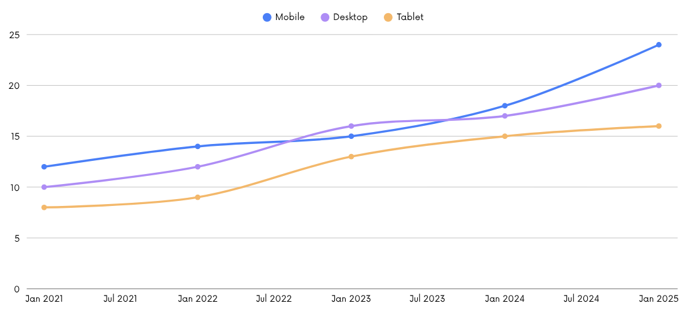

Why is this important?
Statistics are one of the main tools used, for better or worst, to influence human decisions. I'm sure we've all been swayed in the past by products claiming that some number of their users see 'positive results'. Beyond capitalistic use, statistics are also often used by journalists to further whatever point they are trying to make. Without a working understanding of what can be interpretted, or not interpretted, from a certain statistic we can be easily manipulated into beliefs that aren't backed by evidence.
Since taking up a career with statistics at the forefront, I've been shocked to learn how many unsubstatiated claims I had been previously buying into. Accordingly, I feel that an education in statistics is hugely beneficial not just to scientists, but anyone wanting to ensure that they aren't being unknowingly swayed into opinions or products that aren't backed by evidence.
How can I improve my understanding of statistics?
My journey into statistics started from privilege, as a student at University. For those of you in the same position, I'd recommend anything with Andrew Gelman in the author list. However there are also a miriad of options for those of you starting from scratch -- one example I've seen mentioned on a number of forums is Head first statistics by Dawn Griffiths.